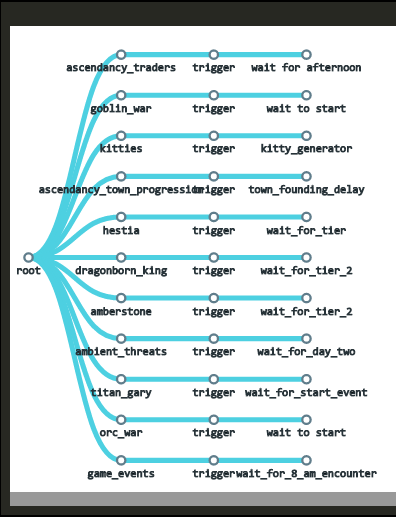
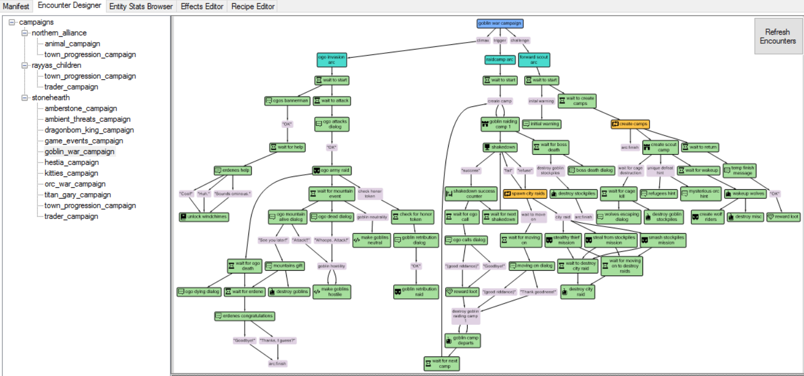
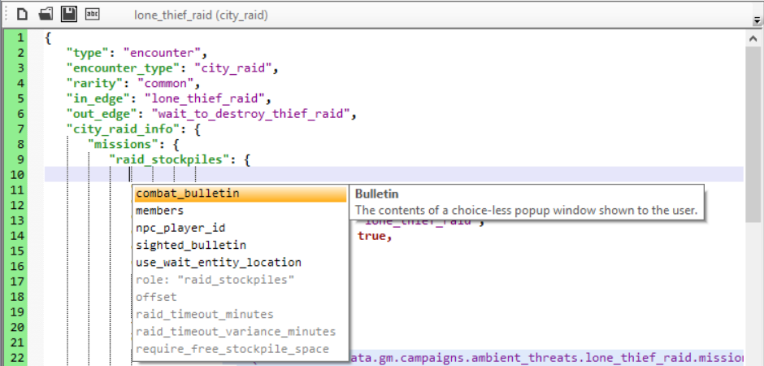

The game_master service is responsible for managing the different campaigns for the players. We can trigger different campaigns depending on the kingdom that the player chose, and also depending on factors such as the biome, game mode, etc.
- What are campaigns, arcs and encounters?
- Game master tree
- In-edges and out-edges
- Starting encounters conditionally
- Planning your campaigns
- How to create campaigns
- How to create arcs
- How to create encounters
- The generic encounters
- How to create your own encounter type
- How to test your campaigns with debugtools
- Editing campaigns with SHED
What are campaigns, arcs and encounters?
Campaigns are narrative-guided gameplay events (for example the goblin campaign, the trader campaign, etc).
They are divided into arcs, each of which fulfills a dramatic/gameplay purpose, and which are made up of encounters.
Encounters are campaign-specific instances of generic, modular, gameplay pieces. A generic encounter (such as spawn camp, or show dialog) can be re-skinned or instantiated with a specific campaign in mind, and put together with other encounters to create many possible narratively-coherent gameplay challenges.
For example, the goblin campaign, which throws increasing numbers of enemies at the player, is made of three arcs (beginning, hit-and-run, and finale) and multiple goblin-specific instances of a few basic, generic encounters (spawn camp, wait, city raid, etc).
Game master tree
All encounters, arcs, and campaigns are nodes (they inherit from stonehearth/services/server/game_master/controllers/node.lua) and exist in a tree, with the game master controller as root node. You can visualize them in the Campaign browser from debugtools:

The game master has campaigns (as children), campaigns have arcs (Trigger, Challenge, Climax), and arcs have encounters. Encounters themselves actually run the content using a reusable script (e.g.: create_camp_encounter.lua) and the JSON data of the specific node listed in the arc index file (e.g.: ambient_threats_arc.json) to customize the encounter parameters.
All the existing campaigns, arcs and encounters can be found inside subdirectories of stonehearth/data/gm.
In-edges and out-edges
Each encounter node needs to have what we call an "in_edge" and can have zero, one, or more "out_edge"s.
These are used to shape a graph or tree that defines the flow of the campaign. The in_edge is a custom identifier, usually the same name than the encounter file, so that different nodes can trigger the same encounters. Example from daily_report_encounter.json:
"in_edge": "daily_report_encounter",
 For the first encounter of each arc, the "in_edge" must be "start". You can only have one encounter with this in_edge per arc.
For the first encounter of each arc, the "in_edge" must be "start". You can only have one encounter with this in_edge per arc.
For out_edges, the syntax will vary. Examples:
Trigger one -- after this encounter finishes executing, it will trigger only one encounter (in this case, an encounter whose in_edge is "create_camps"):
"out_edge" : "create_camps",This other encounter will trigger one encounter chosen randomly from the ones in the array:
"out_edge": { "type": "trigger_one", "out_edges": [ "00_sighting_intro", "00_sighting_intro_rc_na", "01_strange_trading_intro", "02a_hello_friend_intro", "11_shook_down_intro", "12_heirbloom_entry", "14_chase_scene_intro", "15_crystal_charging_intro", "21_residents_intro", "23_borrow_crafter_entry" ], "fallback": "quest_finish" }The "fallback" key points to an encounter that will be triggered if none of the encounters in the array can be triggered (all of their "can_start" checks fail). It is optional.
This will do the same, but the edges will have a weight so that we can control the chances of trigger each one of them:
"out_edge": { "type": "trigger_one", "out_edges": [ { "type": "weighted_edge", "out_edge": "do_nothing", "weight": 5 }, { "type": "weighted_edge", "out_edge": "spawn_friendly_entities", "weight": 1 } ], "fallback": "quest_finish" }Trigger many -- this encounter will trigger all of the encounters in the array at the same time once it finishes executing:
"out_edge": { "type": "trigger_many", "out_edges": [ "check_honor_token", "wait_for_mountain_event", "wait_for_ogo_death" ] }Trigger sequence -- this will trigger a sequence of edges, one each time this out edge specification is triggered (so usually you'd use this in a generator encounter, or in an encounter that can get triggered many times):
"out_edge": { "type": "trigger_sequence", "out_edges": [ { "out_edge": "encounter_1", "repeats": 6 }, "encounter_2" ], "repeat_last": false }The entries inside the array can be either names of out edges, like for the "trigger_many" type, or an object with an "out_edge" and a "repeats" field. This will make the encounter repeat N times before the next encounter of the sequence gets triggered. Optionally we can also define a "repeat_last" field outside of the array (defaults to false). If we set it to true, the last encounter will repeat forever each time this encounter triggers an out edge after finishing the sequence, otherwise the sequence will just stop after finishing with the last encounter.
Destroy tree -- this will destroy a branch from the campaign tree (useful so that already finished quests don't clutter up the tree):
"out_edge": { "type": "destroy_tree", "root": "generator_for_chance", "destroy_root": true }We'll destroy the path from the edge specified in "root", including it depending on the "destroy_root" field. You might see encounters in the game with type
"none"that simply have an out edge of this type, to clean up after finishing a series of encounters. Be careful when using this, you might delete some node that you still want to keep.
We can also mix types, like this:
"out_edge" : {
"type" : "trigger_many",
"out_edges" : [
"trigger this edge always",
{
"type" : "trigger_one",
"out_edges" : [
"this edge has weight 1 (20% chance)",
{
"type" : "weighted_edge",
"out_edge" : "this edge has weight 4 (80% chance)",
"weight" : 4
}
]
}
]
}
To signal the end of the current arc, allowing the campaign to start another arc, we use "arc:finish":
"out_edge" : "arc:finish"
Other encounters from this arc might still be around, but they should resolve themselves on their own.
Some of the encounters will define their out edges inside their info section so that they can control which one will spawn depending on how the encounter ends, so they won't have the "out_edge" property at the root level of the JSON.
Starting encounters conditionally
There are some encounters that are used to check for conditions themselves, in order to trigger their out edges when the condition is met.
But we can also add checks in any encounter JSON file to allow the encounter to start only under certain conditions.
These are added in a "can_start" : {} section, normally below the in/out edges. For example:
"can_start": {
"test_1": {
"game_mode_check": {
"type": "deny_if",
"item": "game_mode",
"value": "stonehearth:game_mode:peaceful"
}
}
}
Here, "test_1" is a custom identifier for the test set. If we have more than one set, the encounter will start when ANY of them passes. We can have more than one check inside a test, in that case the encounter will start only when ALL of its checks pass.
We can use whatever name for the checks ("game_mode_check" in the example above), because what matters is the properties inside:
"type" -- one of the following:
"deny_if" / "deny_if_not" / "deny_if_less_than" / "deny_if_greater_than" / "deny_if_between" / "deny_if_not_between""item" -- the thing that we're comparing to. It can be one of these:
- "kingdom" -- we'll compare the URI of the player's kingdom ("value" will be the URI of a kingdom).
- "net_worth" -- we'll compare the value of the player's net worth. This is deprecated, use "score" instead.
- "score" -- we'll compare one of the player's score fields. In this case, we'll add a "score_type" field, to specify the score name (e.g. "military_strength" / "net_worth").
- "num_citizens" -- we'll compare the player's current number of citizens.
- "days_elapsed" -- we'll compare the number of days that passed since game start.
- "reached_citizen_cap" -- we'll check if the player has already reached their citizen cap ("value" will be either true or false).
- "biome" -- we'll compare the URI of the current biome ("value" will be the URI of a biome).
- "game_mode" -- we'll compare the URI of the current game mode ("value" will be
"stonehearth:game_mode:peaceful","stonehearth:game_mode:normal"or"stonehearth:game_mode:hard", assuming a vanilla game). - "hostility" -- whether the player is hostile to the "npc_player_id" from this node's context. The "npc_player_id" is a field used in certain types of encounters (e.g. create_camp), and will become part of the context that is shared among nodes on the same branch.
- "time_of_day" -- we'll compare the current time of day ("value" will be a number greater or equal to 0 and lower than 24).
- "exists_in_world" -- we'll check if an item is placed in the world and owned by the player. For this type, we'll need to add a "uri" field to specify the URI of the item, and "value" will be true or false.
- "campaign_completed" -- we'll check whether the player has finished a given campaign. We'll need to add a "campaign_name" field with the name of the campaign as defined in the
gm_index.jsonfile ("value" will be true or false). - "script" -- runs the
start()function of the specified Lua script (we'll add an extra "script" field pointing to it) and compares its return value to the specified "value" field. - "number_active" -- we'll check how many instances of the given node are currently active, (i.e. how many times "start_node" has been triggered minus how many times "end_node" has triggered, if we don't specify a "start_node" it will default to the value of "in_edge").
- "number_spawned" -- check how many times a given node has been triggered (we'll add a "node_name" field with the ID of the node as defined in the arc's JSON file).
- "city_tier" -- we'll compare the city tier of the player's town (for a vanilla game, "value" would normally be 1, 2 or 3).
- "highest_job_level" -- check the hearthlings that have a specific job (we'll add a "job_alias" field to point to the job URI) and return the highest level that they have, to compare with "value".
- "config" -- we'll compare the value of an arbitrary config variable. These can be specified in
stonehearth.json,user_settings.jsonor on the command line. We'll add a "key" field with the name of the config variable. - "counter" -- compare the value of an arbitrary counter variable. Counter variables are campaign-wide and set using the
set_countersencounter. We'll add a "key" here for the name of the counter variable. - "weather" -- we'll compare the URI of the current weather ("value" will be the URI of a weather).
- "and" -- returns true if ALL subtests pass. We'll add a "tests" : {} field containing checks.
- "or" -- same than "and", but returns true if ANY subtest passes.
- "none" -- this is used for testing purposes, the check will always pass.
"value" -- we'll compare the value returned by "item" with the value here using the condition from "type". If the value is meant to be a number, we can also specify a range (e.g. for the "deny_if_between" checks), like this:
"value" : { "min" : 0, "max" : 10 }
The custom name that we use for the check can be used in game mode tuning overrides. If you create a custom encounter type, you can have a custom can_start function in it too.
Planning your campaigns
You can make many types of encounters, from a storyline that evolves with player choices, to just random ambient encounters, like the ambient threats from the stonehearth mod.
It is important that you plan carefully what you want to add to your campaigns and work on it little by little, since depending on the encounter type, creating chains of encounters can involve many files.
Once you know how will your campaign develop, think which of the different encounter types available is most suited for your encounters, and if none is useful, create your own reusable encounter type, or use a script encounter instead.
Reusing the existing encounter types allows us to create campaigns by using only JSON files, which is easy. For script encounters or custom controllers, you will need to use Lua.
How to create campaigns
To create campaigns you can copy the stonehearth/data/gm/gm_index.json file and edit it.
Make sure to add this alias to your manifest:
"aliases" : {
"data:gm_index" : "file(data/gm/gm_index.json)"
}
Then add a mixinto to the gm index of the stonehearth mod:
"mixintos" : {
"stonehearth:data:gm_index" : "my_mod:data:gm_index"
}
If you want to remove campaigns from the stonehearth mod so that they don't run when your mod is enabled, you can use mixintypes, but remember that it may affect other mods that assume that those campaigns will run.
Your gm_index.json file will look something like this (example from the northern_alliance mod):
{
"type": "index",
"campaigns": {
"hunting": {
"animal_camps": "file(campaigns/hunting/animal_campaign.json)"
},
"town_progression": {
"na_town_progression": "file(campaigns/town_progression/town_progression_campaign.json)"
}
}
}
Each key under "campaigns" is a custom identifier (the campaign subtype), and contains a campaign node name pointing to a campaign index file path.
How to create arcs
Once you've created your campaign file, it's time to edit it. Continuing from the example above, this is from animal_campaign.json:
{
"type": "campaign",
"rarity": "common",
"can_start": {
"test_1": {
"kingdom_check": {
"type": "deny_if_not",
"item": "kingdom",
"value": "northern_alliance:kingdoms:northern_alliance"
}
}
},
"arcs": {
"trigger": {
"migratory_animals": "file(arcs/migratory_animals_arc.json)"
},
"challenge": {},
"climax": {}
}
}
We can have can_start checks for preventing the campaign to start here. The "rarity" is not really implemented.
Then we have an "arcs" section. Arcs progress from "trigger" to "challenge" to "climax". Only the "trigger" arc is mandatory. Many campaigns such as the ambient threats and trader campaigns only use the trigger arc.
We define only one arc file per each, with an identifier name for debugging, pointing to the arc index JSON file. An example of what it should contain (from the kitties campaign):
{
"type": "arc",
"rarity": "common",
"encounters": {
"kitty_generator": "file(encounters/kitty_generator.json)",
"spawn_koda": "file(encounters/spawn_koda.json)",
"spawn_jacko": "file(encounters/spawn_jacko.json)",
"do_nothing": "file(encounters/do_nothing.json)"
}
}
The "type" is "arc". Inside "encounters" we list all of the encounter JSON files that we'll use in our campaign (add them as you create them). The identifiers for the encounters only have lowercase, numbers and underscores by convention. Try to use short, descriptive names.
How to create encounters
Encounters are just JSON files, like the campaign and arc indexes. We can organize our GM files in subfolders, so that every folder contains the encounters of a different arc, etc.
In general, encounter files will have the following:
{
"type": "encounter",
"encounter_type": "create_camp",
"rarity": "common",
"in_edge": "spawn_friendly_entities",
"out_edge": {
"type": "trigger_many",
"out_edges": [
"spawn_enemy_entities",
"wait_for_duration"
]
},
"create_camp_info": {
}
}
As mentioned before, the "rarity" is not really used.
"type" : "encounter"
"encounter_type" -- this is one of the existing types or a custom one if you created it.
"in_edge" -- required field, this is the identifier for this encounter and usually matches the identifier for this file from the arc index.
For each arc, you should have one encounter whose in edge is named "start". This will be the encounter that triggers when the arc starts to run."out_edge" -- optional field, an out edge as explained before.
"unique" -- optional field (a boolean). When true, only one encounter of this type can be running at the same time.
"can_start" : {} -- optional field. As explained before, these are flags to prevent running this encounter.
"mixins" -- optional field. A URI or array of URIs of mixins, so that you can reuse information in your encounters. Be careful if you nest mixins for encounter files, sometimes it's better to have all the information in sight.
"encounter_info" -- this field's name will vary, it's normally the encounter type with
_infoattached at the end. Will contain all the data required for this encounter type.
How to create your own encounter type
You can create a new type of reusable encounter in your mod (pretty similar to the script encounter but more organized). To do this:
- Create a controller and add it under the "controllers" section of your manifest
- The key for the controller must be named "game_master:encounters:your_custom_type"
- When using it in an encounter's JSON file, you must add an extra key called "mod_root", at the same level than "encounter_type", and its value should be the namespace of your mod.
All encounters (and all scripts started from encounters) are controllers. More on controllers in this section of the guide. So you can use lifecycle functions if you need to. These controllers need to have the start(ctx,info) function, and may also have other functions, such as stop(), suspend()/continue() or can_start(ctx), besides any custom function that you create.
You can find the controllers for the existing encounter types in stonehearth/services/server/game_master/controllers/encounters. There's also other scripts used for encounters in other subfolders of stonehearth/services/server/game_master/controllers.
How to test your campaigns with debugtools
Refer to the section about the Campaign Browser for how to use it.
Editing campaigns with SHED
SHED has a great tool for creating encounters. At the time that this guide was written, you must prepare the gm_index.json, the campaign and arc JSON files before using it.
Add an alias in your mod pointing to your gm_index.
"aliases": { "data:gm_index" : "file(data/gm/gm_index.json)" } The alias has to be exactly "data:gm_index", otherwise SHED won't be able to find it. Also, remember to add a mixinto to the stonehearth's gm_index so that you can test your campaigns in the game.Open SHED and click on the "Encounter Designer" tab.
You should see a tree listing the campaigns of all the mods you have ready in your folder. Click on one of the campaigns and you should see a graph at the right displaying what the campaign looks like:

You can zoom in/out of the graph with the mouse wheel, and you can pan around the graph with the third mouse button (press the mouse wheel, hold it down, and move the mouse). You can see subtrees in the graph being highlighted when you hover over them.
Whenever you change a node, remember to save the changes and click on the "Refresh Encounters" button at the top right, so that the graph gets updated (for example, imagine you create a new encounter/node, it will be unattached to the graph. But if you edit another node so that it points to your new node as an out_edge, that won't be reflected in the graph until you reload/refresh). Sometimes it will refresh automatically, for example when deleting nodes.
To create an encounter: right-click in an empty part of the tree/graph, go to 'Add New Node->' and choose the type of the encounter you want to add (only default encounter types are supported, custom ones won't appear).
Then, a dialog will appear. Go to the encounters folder of your choice (it might be pointing to the wrong arc perhaps) and write a name for your new JSON file. It is recommended that the name for the file is in lowercase and with no spaces or symbols. It can contain underscores and numbers, though.
Once you click on 'Save', the JSON file will be created and the encounter will get added to the list of encounters (if you have more than one arc it won't, but right-clicking on the node in the graph will show you an option to parent it to the arc of your choice). If you don't see it added you might need to refresh the encounters.
After it is created, select its node and change some of the default values to get rid of the errors in the file, such as the in/out edges, etc. If it's your first encounter, make sure to give it an in edge of "start", so that it gets parented to the arc node after refreshing and starts shaping the tree.
You can also clone an encounter or delete it via context menu action (right-clicking on the encounter node). It will add/remove the encounter to the arc JSON file automatically. When deleting, it will really delete the JSON file (unlike when removing aliases in the Manifest tab) so make sure that you truly want to delete it.
You should see several options in the bar above the JSON editor. The first one is to open the current file in your default text editor (for JSON files), the second one is for opening the containing folder of this file, the third one is to save, and the last one is to localize the file (remember that sometimes localizing might not work). If you added mixins, the preview with mixins button should also appear at the end.
When you save, the JSON will be formatted nicely if you had some bad indentations.
The JSON editor in SHED supports autocomplete and hints for encounters, which is extremely useful. If you don't get the dropdown for a property, try deleting everything until the property name, then type the ':' and see if it appears. Navigate through the options with the arrow keys and press Enter or double click to confirm an option:

If the color at the left of the file is green, everything's fine. When it's red, SHED won't let you save the file (syntax errors). Hovering over the arrows at the left will show a tooltip describing the problem. If it's orange, there might be some missing field or some data that SHED doesn't recognize, but will let you proceed. When it's gray it means that SHED isn't checking for errors in this file because it doesn't know what should it contain, so you're responsible for what you're writing.
These are different node types you can see in the graph and their meaning:
- Blue nodes: represent the campaign itself. Click on one and you should see the corresponding campaign.json file, and you will be able to edit it. You can edit the gm_index file in the Manifest tab, if you need to.
- Turquoise nodes: represent arcs. Click on one and you should see the corresponding arc.json file, which lists all the encounters from that arc.
- Gray nodes: represent arc starting or ending nodes, and out_edges from some encounters. They don't have associated files, they are just indicating choices or naming out edges.
- Green nodes: encounter nodes. These can be of any type. They have a little icon at the left indicating the type of encounter.
- Orange nodes: these are generator encounters. They are used to spawn the same out edges in a loop, according to specific conditions.
- Nodes with red borders: these either have errors in their JSON, or are not specified in the list of encounters.
- Nodes with a streaked background: they have unsaved changes.